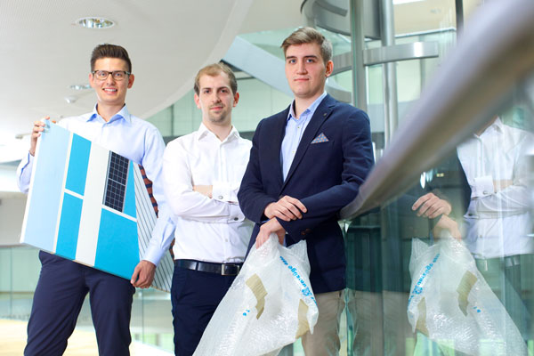

Don't cry because it's over, smile because it happened.
Projects
Music Beam musicbeam.org
MusicBeam is an open source software which enables you to use your home projector to create an entire laser show for your next party. MusicBeam is music triggered and allows you to adjust nearly every detail of the performance.
Veerkant veerkant.com
Veerkant offers a selection of fine art pieces. By exploring our gallery you bypass the saturation of the mass market. Quality is at the forefront of our operations. We know it can be hard, but we have the right tools and know-how to ease your decision. Explore and experience on our platform, rest assured that your investment is in the right hands.
YOLOsurvey Proof of Concept
YOLOsurvey is a polar question survey platform, that is explicitly targeting Generation Z. The Projects goal was it to increase the response rate of surveys when shared over Facebook and other social media. The reponse rate was successfully improved form 2% to 66% (n=150).
Lite Desk Deutsche Telekom AG
LiteDesk is a browser based operating system similar to Google's Chromebook.
LiteDesk uses Linux and Mozilla technology with no local user files and no conventional operating system. This means it works in an environment that renders most viruses and Trojans powerless. And because the system is administrated centrally and users don't need to install any software, it stays that way.
Zepp.it Searching made Social
Zepp.it is a graph based search engine to locate service providers within your own social network. Zepp.it was discontinued after Facebook's Graph Search Release in Jan. 2013.
Never let your schooling interfere with your education.
Curriculum Vitae
- Full name
- Johannes Hoppe
- Born:
- 1988 Brandenburg (Havel), Germany
Work Experience
| 2017/01 – today |
Team Lead Software Engineering, Thermondo
|
| 2016/02 – 2016/12 |
Lead Software Engineer, Thermondo
|
| 2015/04 – 2016/02 |
Senior Software Engineer, Thermondo
|
| 2014/05 – 2015/04 |
Software Engineer, Thermondo
|
| 2012/03 – 2015/10 |
Founder & Managing Partner, Veerkant
|
| 2011/09 – 2014/05 |
IT-Systems Consultant freelance, IVT, Cabig, FZBBMedia, more...
|
| 2013/04 – 2013/06 |
Consulting Design Thinker, B.A.U.M.,
HPI School of Design Thinking
|
| 2012/09 – 2012/12 | Quality Engineer freelance, Telekom Innovation Laboratories |
| 2009/08 – 2011/09 | Systems Administrator, Hasso Plattner Ventures |
Education
| 2011 – 2012 | Advanced Design Thinking, VNR AG, HPI d.school |
| 2011 | Basic Design Thinking, Breuninger Stiftung, HPI d.school |
| 2008 – 2013 | IT-Systems Engineering, Hasso Plattner Institut, University of Potsdam |
| 2008 | Allgemeine Hochschulreife, CJD Christophorus Gymnasium Versmold |
Languages
- German
- native speaker
- English
- fluent
- Spanish
- beginner
IQ Test Scores
- MAT
- PR 100
- CFT-20
- PR 100
Awards & Memberships
- Business Plan Competition
- 3rd place (2014)
- Business Plan Competition
- 2nd place (2012)
- Mensa International
- high IQ society (since 2008)
It's wonderful what we can do if we're always doing.
References
References
Johannes is an ambitious, analytic, and at the same time a creative person who's able to reliably execute time-critical tasks and manage complex situations.
He is a valuable asset to any high power team.
Es ist immer gut, wenn man weiß, dass man sich auf bestimmte Leute verlassen kann.
Johannes was an extremely valuable and pleasant team member. He is highly skilled and quickly familiarizes himself with new IT technologies.
He was very committed to the project, solved urgent and important issues without the need for supervision and willingly took on new responsibilities.
Wer nicht neugierig ist, erfährt nichts!